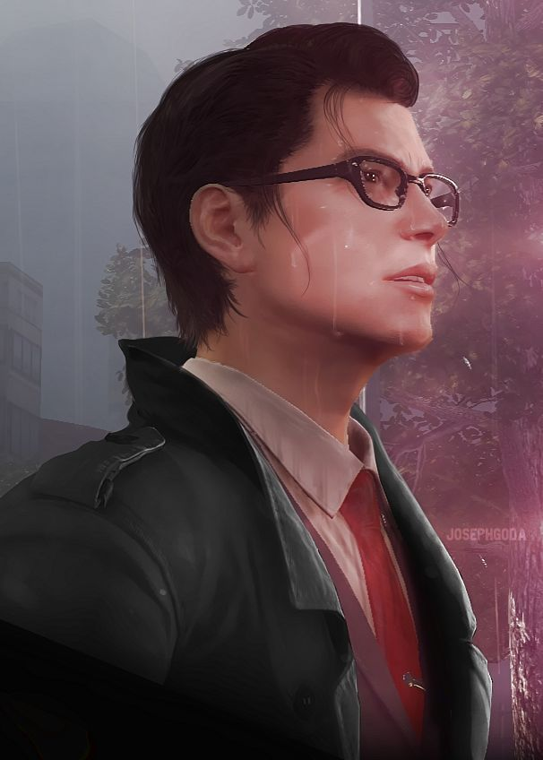

Shibaura, Tokyo, Japan
Todo comienza en el Hospital Mental Beacon, donde Sebastian y sus compañeros investigan una masacre. Al llegar al lugar, encuentran cuerpos por todas partes, con sangre y vísceras esparcidas. Cuando Sebastian encuentra a un sobreviviente solitario, también descubre una transmisión de video. Al rebobinarla, ve a un escuadrón de policías disparando a un enemigo invisible antes de ser aniquilados, con una figura encapuchada presente. La figura mira hacia arriba y luego aparece detrás de Sebastian, momento en el que todo se desmorona. Literalmente.
Sebastian Castellanos

Sebastián Castellanos es el protagonista principal de los videojuegos The Evil Within y The Evil Within 2. Como detective del Krimson City Police Department (KCPD), se ve arrastrado a un mundo retorcido lleno de horrores inefables.
Joseph Oda
Joseph Oda es un personaje principal en The Evil Within. Como detective del Departamento de Policía de Krimson City (KCPD), trabaja junto a Sebastián Castellanos y Juli Kidman.
Juli Kidman

Juli Kidman, también conocida como “Kid” por sus amigos y colegas, es la deuteragonista de la serie The Evil Within.